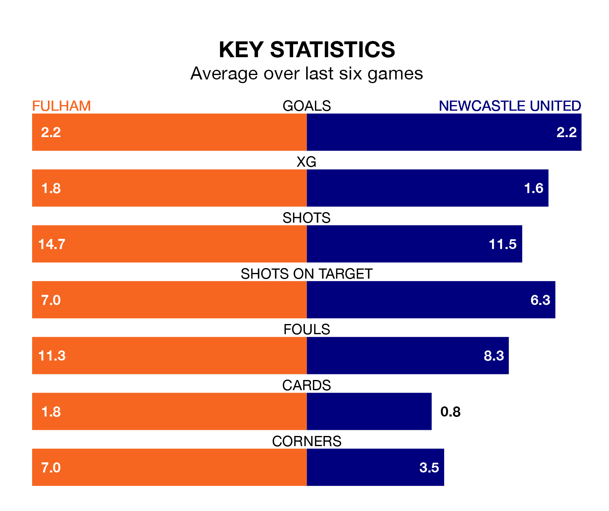

Fulham host Newcastle United on Saturday at Craven Cottage in the Premier League.
In their last league match, on Tuesday, Fulham lost to Nottingham Forest 3-1 away, with their goal scored by Tosin Adarabioyo.
Newcastle drew, 1-1 at home against Everton, with Alexander Isak scoring their goals.
With 64 goals in 30 games so far this season, Newcastle are scoring more than average in the league with 2.1 goals per game. But they are conceding more than average too, letting in 52 goals at a rate of 1.7 per game.
Fulham, meanwhile, are below average scorers, with 1.5 goals per game, compared to a league average of 1.6. They have conceded 1.6 goals per game.
With Bernd Leno between the sticks, the Cottagers can rely on one of the league's safest pair of hands. He has kept eight clean sheets in his 31 appearances this season, and only one other 'keeper – Arsenal's David Raya – has been able to prevent the opposition scoring on more occasions in the Premier League.
In United's net, Nick Pope has six clean sheets in 14 games.
In the last 10 years, Fulham and Newcastle have played each other on 10 occasions. Fulham won two of them, Newcastle six, and they drew twice.
On average, the Cottagers scored 0.6 goals and the Magpies 1.8 in those matches.
Their last meeting was on January 27, when Newcastle won 2-0 away.
The hosts are 13th in the table after 31 games, of which they have won 11 and drawn six, earning 39 points.
The Magpies are five places ahead of Fulham in eighth, with 13 wins and five draws putting them on 44 points.
Fulham are in mixed form in the Premier League, with three wins and a draw from their last six games.
With two wins and two draws over that period, the away side's form is slightly worse – they have taken eight points from 18, compared to the Cottagers's 10.
Saturday's match will be refereed by Samuel Allison, who has taken charge of two Premier League games so far this season, issuing no red cards and booking eight players. He has not awarded any penalties.
He is yet to oversee a match featuring either Fulham or Newcastle this season.
Updated: 16:41 (UTC), 04/04/24